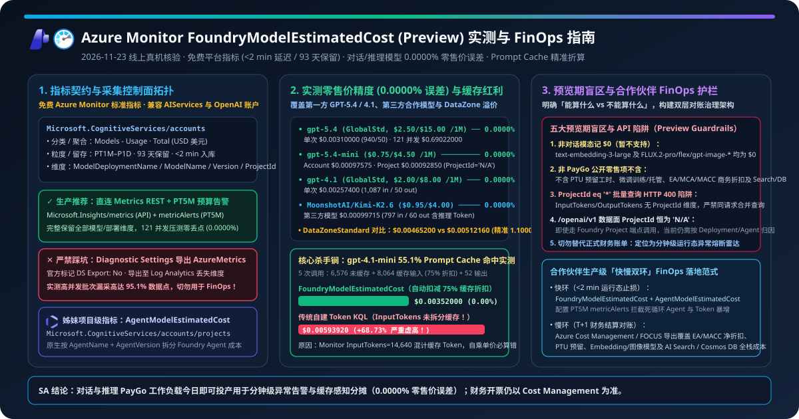

Azure Monitor FoundryModelEstimatedCost (Preview) — 可用度、实测精度与合作伙伴 FinOps 指南
面向合作伙伴与企业 AI 解决方案架构师（SA）的实测评估工作台：回答「现在能不能上生产、账算得准不准、有哪些预览期盲区、跟自建 Token KQL / Azure Cost Management 怎么配合」。基于 2026-11-23 线上实测数据，FoundryModelEstimatedCost 在受支持的对话与推理模型上与公开零售价保持 0.0000% 误差，并在 55.1% Prompt Cache 命中场景下彻底消除自建 Token KQL +68.73% 的虚高误判。
一图看懂：FoundryModelEstimatedCost 控制面定位与实测全景
无需额外部署计费代理或解析日志流——指标直接注册在 Microsoft.CognitiveServices/accounts 资源提供程序上，同时兼容 Microsoft Foundry (AIServices) 与独立 OpenAI 账户。

平台指标核心规格（Control-Plane Contract）
| 资源命名空间 | Microsoft.CognitiveServices/accounts（含 kind: AIServices 与 kind: OpenAI） |
|---|---|
| 指标分类 / 单位 | Models - Usage · Total 聚合（美元 USD，平台标准免费指标） |
| 时间粒度 / 留存 | PT1M、PT5M、PT15M、PT30M、PT1H、PT6H、PT12H、P1D · 93 天保留 |
| 入库延迟 | 实测 < 2 分钟（适合 PT5M 准实时异常消费熔断告警） |
| 支持维度 | ModelDeploymentName、ModelName、ModelVersion、ProjectId（注：标准/项目 /openai/v1 调用当前返回 ProjectId = 'N/A'） |
| 姊妹项目级指标 | AgentModelEstimatedCost（位于 Microsoft.CognitiveServices/accounts/projects），提供 AgentName + AgentVersion 级成本归因 |
给合作伙伴的一句话选型定调（SA Verdict）
用于对话与推理类 PayGo 模型（含第一方 GPT-5.4 / GPT-4.1 系列与第三方合作模型如
MoonshotAI/Kimi-K2.6）的分钟级成本突增告警（metricAlerts）、自动计入 Prompt Cache 折扣与 DataZone 1.10× 系数的部门级准实时分摊看板。
Embedding（
text-embedding-3-large）与生图模型（FLUX.2-pro / FLUX.2-flex / gpt-image-*）当前记为 $0；且不含 PTU 预留工时、微调训练/托管、EA/MCA/MACC 商务谈判折扣及下游 AI Search / Cosmos DB 账单。T+1 财务结算对账务必以 Azure Cost Management / FOCUS 导出为准。
数据面推理与 FinOps 快慢双环架构流向图
为什么传统「在 Log Analytics 里拿 AzureMetrics 的 InputTokens 乘单价」既漏数据又算错钱？下图展示经过真机验证的标准采集控制面：
交互式 Prompt Cache、部署 SKU 与自建 KQL 偏差模拟器
点击下方真机实测预设或拖动滑块，实时对比 FoundryModelEstimatedCost、传统自建 InputTokens KQL 公式以及企业 EA/MACC 净账单之间的精确数值关系。
InputTokens（14,640）未把缓存命中的 8,064 Token 拆出；合作伙伴若自己写 KQL 乘单价会多算 +68.73%，而 FoundryModelEstimatedCost 服务端直接读取推理计费明细，实现 $0.00352000（0.0000% 误差）精准上报。
2026-11-23 线上真机核验全矩阵（已脱敏 · 零订阅与内部代号）
全部数据通过 Microsoft.Insights/metrics REST API 在真实 Azure 环境中独立采样并与公开零售价逐笔核对。
| 模型 / 测试项 | 部署 SKU 与调用路径 | 实测工作负载规模 | 公开零售费率 (/1M) | 指标实测值 (USD) | 精度 / 架构判定 |
|---|---|---|---|---|---|
gpt-5.4（单次基线） |
GlobalStandard · AIServices |
单次调用：940 输入 / 50 输出 |
$2.50 输入 / $15.00 输出 |
$0.00310000 |
0.0000% 误差 |
gpt-5.4（高并发压测） |
GlobalStandard · 直连 Metrics REST |
121 次并发批次：214,204 输入 / 10,314 输出 |
$2.50 输入 / $15.00 输出 |
$0.69022000 |
0.0000% 误差（REST 零丢点） |
gpt-5.4-mini（双端点验证） |
GlobalStandard · Account 与 Project /openai/v1 |
Account 端点与 Foundry Project 端点实测 | $0.75 输入 / $4.50 输出 |
Account: $0.00097575Project: $0.00092850 |
0.0000% 误差 注： ProjectId 当前返回 'N/A' |
gpt-4.1 |
GlobalStandard · AIServices |
单次调用：1,087 输入 / 50 输出 |
$2.00 输入 / $8.00 输出 |
$0.00257400 |
0.0000% 误差 |
gpt-4.1-mini（Prompt Cache） |
GlobalStandard · 55.1% 缓存命中 |
5 次调用：6,576 未缓存 + 8,064 缓存输入 / 52 输出 |
$0.40 未缓存 / $0.10 缓存 (75% off) / $1.60 输出 |
指标：$0.00352000自建 KQL： $0.00593920 |
0.0000% 误差 消除 KQL +68.73% 虚高 |
MoonshotAI/Kimi-K2.6 |
GlobalStandard · 第三方合作模型 |
797 输入 / 60 输出（含推理 Token） |
$0.95 输入 / $4.00 输出 |
$0.00099715 |
0.0000% 误差（含推理计费） |
| SKU 系数对比（Global vs DataZone） | GlobalStandard vs DataZoneStandard |
同构对照调用组归一化比对 | DataZone 公开溢价 +10% |
Global: $0.00465200DataZone: $0.00512160 |
精准验证 1.1000× (+10%) |
text-embedding-3-large |
向量化模型（Embeddings） | 线上真实 Embedding 批处理请求 | 按公开 Embedding 费率计费 | $0.00000000 |
预览期盲区（记 $0） |
FLUX.2-pro / FLUX.2-flex / gpt-image-* |
图像生成模型（Image Gen） | 线上真实文生图请求 | 按公开图像生成费率计费 | $0.00000000 |
预览期盲区（记 $0） |
关键实测发现 A：为什么必须禁用 AzureMetrics 诊断导出？
许多运维团队习惯开启 Diagnostic Settings 将 AllMetrics 导入 Log Analytics 工作区再用 KQL 汇总。实测表明该路径对 FoundryModelEstimatedCost 存在致命问题：
- 官方明确不支持（
DS Export: No）：导出到AzureMetrics表后丢失模型与部署维度明细，无法做多租户/多模型成本拆分。 - 高并发严重漏点（实测丢弃高达 95.1%）：在 121 次并发批次压测中，
AzureMetrics表漏采高达 95.1% 的高并发数据点，而直连Microsoft.Insights/metricsREST API 完整命中$0.69022000（0.0000% 误差）。
关键实测发现 B：Foundry 多项目归因该用哪个指标？
实测发现，通过账户级或 Foundry Project 级的 /openai/v1 端点发起标准推理请求时，FoundryModelEstimatedCost 上的 ProjectId 维度当前均返回 'N/A'。
- 多团队共享
/openai/v1场景：建议在预览期按不同业务线拆分独立的ModelDeploymentName（例如team-sales-gpt41m），即可通过部署维度实现 100% 精准归因。 - Foundry Agent Service 场景：直接查询子资源
Microsoft.CognitiveServices/accounts/projects上的姊妹指标AgentModelEstimatedCost，原生具备AgentName与AgentVersion维度！
✓ 适用场景（Good Fit — 建议合作伙伴立即启用）
- 分钟级失控 Agent / 死循环熔断告警：配置
PT5M窗口的Microsoft.Insights/metricAlerts，在 2 分钟内捕获异常 USD 消耗峰值，比等待次日 Cost Management 账单快 12–24 小时。 - 重度 Prompt Cache 业务（RAG / 长系统提示词 / 多轮 Agent）：自动计入缓存输入折扣，彻底替代虚高 40%–70% 的手写 Token 乘法公式。
- 混合模型路由 FinOps 看板：同一套 REST API 统一监控第一方 GPT-5.4 / GPT-4.1 与第三方模型（如
MoonshotAI/Kimi-K2.6）及DataZoneStandard部署。
✕ 不适用场景（Not For — 切勿承诺客户替代账单）
- 客户月度正式财务开票（Customer Invoicing）：指标始终按公开零售 PayGo 列表价计算，不反映企业专属 EA / MCA / MACC 商务折扣。
- 纯 Embedding 流水线或生图平台监控：预览期内
text-embedding-3-large、FLUX.2-pro、FLUX.2-flex、gpt-image-*均上报$0。 - PTU 预留容量与微调托管成本核算：不包含 Provisioned Throughput 小时费、Fine-Tuning 训练/托管工时费及 AI Search / Cosmos DB 关联资源账单。
避坑实战模板 1：分步查询 REST / Azure CLI（规避 ProjectId eq '*' HTTP 400 陷阱）
FoundryModelEstimatedCost,InputTokens,OutputTokens 合并查询并附带 $filter="ProjectId eq '*'"！因为 InputTokens 与 OutputTokens 不具备 ProjectId 维度，服务端会直接返回 HTTP 400 BadRequest。必须按下方模板拆分为独立请求，或仅按共享维度 ModelDeploymentName eq '*' 过滤。
# 1) 独立查询 FoundryModelEstimatedCost（支持 ModelDeploymentName / ModelName / ProjectId 维度） az monitor metrics list \ --resource "/subscriptions/<sub-id>/resourceGroups/<rg-name>/providers/Microsoft.CognitiveServices/accounts/<foundry-account>" \ --metric "FoundryModelEstimatedCost" \ --interval PT5M \ --aggregation Total \ --filter "ModelDeploymentName eq '*' and ModelName eq '*'" # 2) 如需查询 Foundry Agent Service 项目级成本，针对子资源 projects 查询 AgentModelEstimatedCost az monitor metrics list \ --resource "/subscriptions/<sub-id>/resourceGroups/<rg-name>/providers/Microsoft.CognitiveServices/accounts/<foundry-account>/projects/<project-name>" \ --metric "AgentModelEstimatedCost" \ --interval PT5M \ --aggregation Total \ --filter "AgentName eq '*' and AgentVersion eq '*'"
避坑实战模板 2：生产环境 PT5M 准实时异常消费告警（Bicep）
param foundryAccountId string
param actionGroupId string
param fiveMinUsdThreshold int = 25 // 每 5 分钟单部署超过 $25 立即告警
resource foundrySpendBurstAlert 'Microsoft.Insights/metricAlerts@2018-03-01' = {
name: 'alert-foundry-estimated-cost-pt5m'
location: 'global'
properties: {
description: '准实时拦截 Foundry / Azure OpenAI 模型推理异常美元消耗突增'
severity: 2
enabled: true
scopes: [foundryAccountId]
evaluationFrequency: 'PT1M'
windowSize: 'PT5M'
criteria: {
'odata.type': 'Microsoft.Azure.Monitor.SingleResourceMultipleMetricCriteria'
allOf: [
{
name: 'EstimatedUsdBurst'
metricNamespace: 'Microsoft.CognitiveServices/accounts'
metricName: 'FoundryModelEstimatedCost'
operator: 'GreaterThan'
threshold: fiveMinUsdThreshold
timeAggregation: 'Total'
dimensions: [
{
name: 'ModelDeploymentName'
operator: 'Include'
values: ['*']
}
]
}
]
}
actions: [
{
actionGroupId: actionGroupId
}
]
}
}
合作伙伴高频问答（Partner FinOps FAQ）与参考资料
Q1：开启或高频查询 FoundryModelEstimatedCost 会产生额外的 Azure Monitor 账单吗？
在标准平台配额内平台指标本身完全免费（$0）：它是 Microsoft.CognitiveServices/accounts 原生上报的标准平台指标（Standard Platform Metric），默认具备 93 天保留期。仅当配置高频自定义 API 轮询超额或配置额外告警规则时按 Azure Monitor 常规规则微额计费。
Q2：传统独立创建的 Azure OpenAI 资源（kind=OpenAI）也能用这个指标吗？还是必须迁移到 Foundry（kind=AIServices）？
两者均可直接使用！ 2026-11-23 实测确认，FoundryModelEstimatedCost 同时注册在 kind: AIServices（Microsoft Foundry）与传统独立 kind: OpenAI 账户上，无需迁移存量资源即可配置监控告警。
Q3：完整双语技术评估文档与测试方法论存放在哪里？
完整脱敏测试报告与参考脚本已归档至 GitHub 仓库 turbo998/Azure-Foundry-Quick-Start：
• 中文完整指南：foundry-model-estimated-cost-guide.md ↗
• 英文完整指南：foundry-model-estimated-cost-guide.en.md ↗